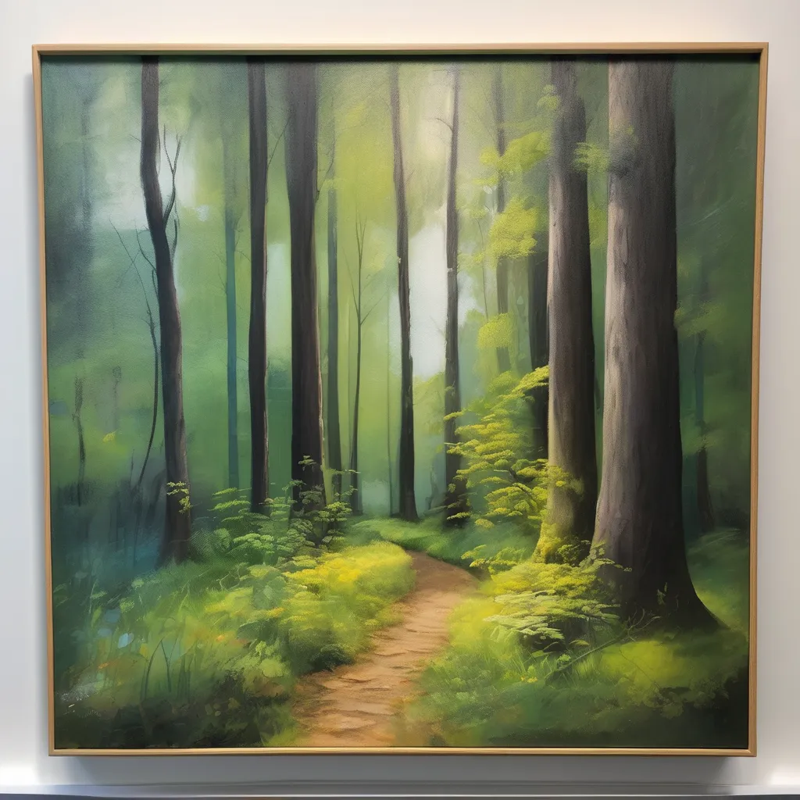
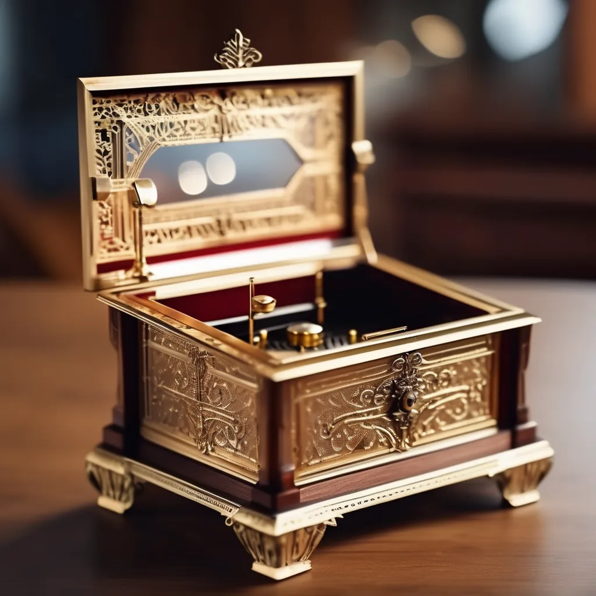

here they are
lots

"Whispers of the forest" - the path beyond
A serene depiction of a woodland path bathed in soft light - evoking solitude, renewal, and the quiet strength of nature embrace.

"The golden melody" - music box memories
A gleaming golden music box captured in timeless elegnce - symbolizing nostalgia, craftmanship, and the harmony between art and memory.
"Sands of time" - the poetry of passing moments
"Moment fall like light - beautiful, fleeting, eternal". Graceful sand clock frozen in motion - a reflection of transition, patience, and the delicate rhythm of time itself.
more